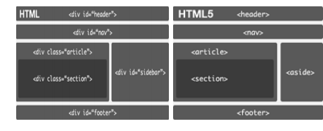
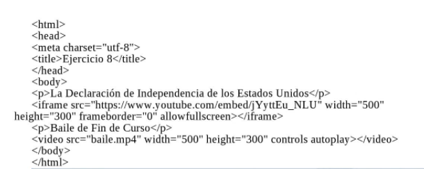

Etiquetas Semanticas
Sirven para dividir un documento en partes logicas, indicando el tipo de contenido que se incluye en cada parte representan por tanto secciones lógicas o componentes de unaaplicació Web o un Documento.
Arias, M. P. B. (2010). El uso de etiquetas semánticas en los artículos lexicográficos de verbos en el DAELE. Quaderns de Filologia-Estudis Lingüístics, 15, 139-158.
Listas
Las listas se utilizan para agrupar información parecida o relacionada en una WEB.
Permiten a los visitantes tener acceso a grupos de ingormación de manera rápida y sencialla.
Prescott, P. (2015). HTML 5. Babelcube Inc..
Enlaces
En este mismo contenido se puede agregar varios enlaces como por ejemplo a videos
utilizando lo ejemplos descritos acontinuación:
